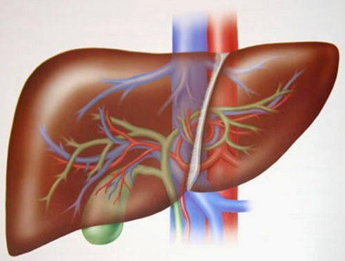

|
El hígado es un órgano grande y vital que se encuentra en la parte superior derecha del abdomen. Tiene una forma triangular, color rojo pardo, superficie lisa y consistencia blanda y depresible. En el adulto humano mide por término medio 26 cm de ancho, 15 cm de alto y 8 cm de espesor a nivel del lóbulo derecho, su peso aproximado es 1,5 kg1.
El hígado humano tiene un peso medio de 1500 g y segrega la bilis, esencial para la digestión de las grasas. También cuenta con otras muchas funciones, entre ellas la síntesis de proteínas plasmáticas, almacenamiento de vitaminas y glucógeno y función desintoxicante
|

|